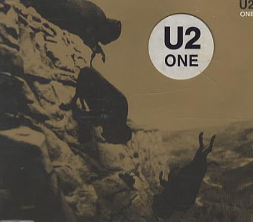

Sua comida favorita é Yakisoba.
Quando estava no 4º ano do fundamental, descobriu que tinha uma marca de nascença na testa que parece uma seta.
Sua cor favorita é azul. Isso foi perceptível no 1º ano do médio, quando ele só vinha de roupas azuis: jaqueta jeans, com calça jeans e tênis azul.
Não tinha alergias, até descobrir que era alérgico à certos remédios...
É do signo de Libra.

O desenho preferido ainda é Gravity Falls.
O melhor filme que já assistiu foi Toy Story 2.

Uma de suas músicas favoritas é:
- One / U2